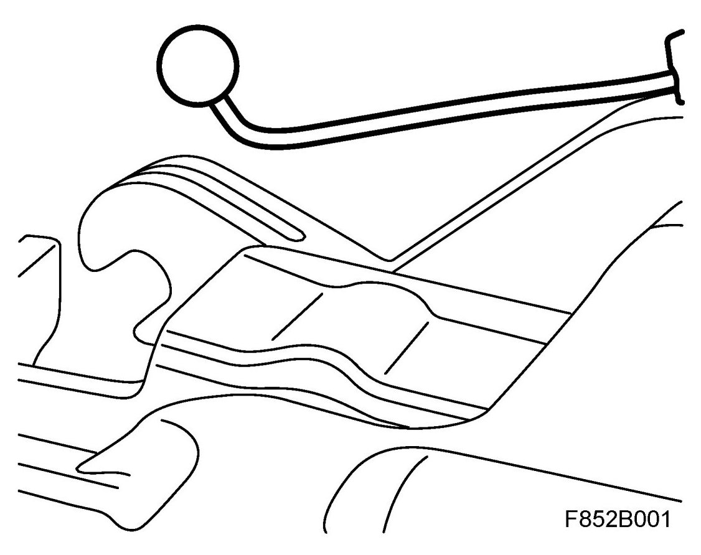
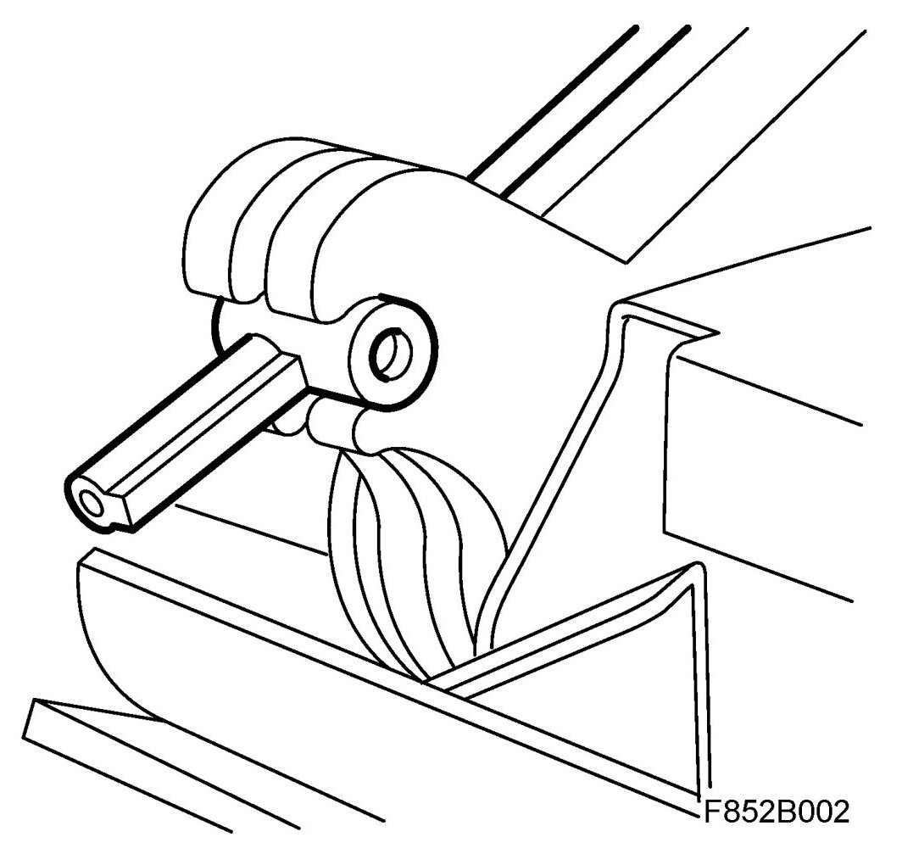

Front Seat Cannot Be Operated Manually
Front Seat Cannot Be Operated Manually
Fault symptoms
Front seat cannot be operated manually
Cause: Defective length adjustment cables fitted in production
Cars affected: Within Vehicle Identification Number range 31046136-31059241
WARNING:
- All cars are equipped with an airbag system that has side airbags as a component. The side airbag is fitted under the backrest upholstery on each front seat.
- Work in accordance with the Safety and handling regulations.
Procedure
Replace adjustment cable 13 100 008. The end of the defective cable is ball-shaped.
Defective cable

Correct cable
